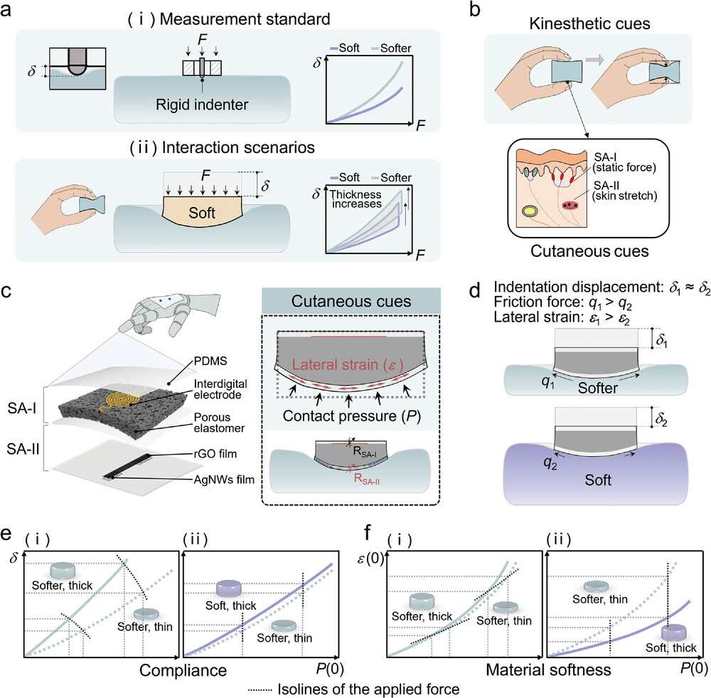
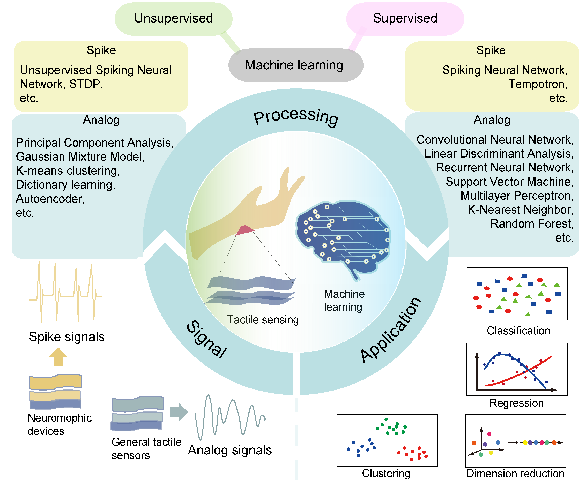

|
Zhixian Hu 胡智娴 I'm a PhD student in Industrial Engineering, Purdue University, under the supervision of Prof. Juan P. Wachs and Prof. Yu She. |

|
EducationI'm interested in robotic perception and cognition, especially robot tactile sensing. * indicates equal contribution. |
ResearchI'm interested in robotic perception and cognition, especially robot tactile sensing. * indicates equal contribution. |

|
A Magnetic-Actuated Vision-Based Whisker Array for Contact Perception and Grasping
Zhixian Hu, Juan Wachs, and Yu She ICRA, 2025 paper / poster / video/ bibtex This study presents a vision-based magnetic-actuated whisker array sensor that integrates both tactile sensing and the manipulation of delicate objects. |
|
|
A Magnetic-Actuated Vision-Based Whisker Array for Contact Perception and Grasping
Zhixian Hu, Juan Wachs, and Yu She ICRA, 2025 paper / poster / video/ bibtex This study presents a vision-based magnetic-actuated whisker array sensor that integrates both tactile sensing and the manipulation of delicate objects. |
|  |
Self-Adaptive Perception of Object's Deformability with Multiple Deformation Attributes Utilizing Biomimetic Mechanoreceptors
Waner Lin, Ziya Wang, Yingtian Xu, Zhixian Hu, Wenyu Zhao, Zhihao Zhu, Zhenglong Sun, Guoxing Wang, Zhengchun Peng Advanced Materials, 2024 paper / bibtex This study proposes an innovative design of a tactile sensor that integrates the capabilities of two slow-adapting mechanoreceptors within a soft medium, allowing self-decoupled sensing of local pressure and strain at specific locations within the contact interface. |
|  |
Machine learning for tactile perception: advancements, challenges, and opportunities
Zhixian Hu*, Lan Lin*, Waner Lin, Yingtian Xu, Xuan Xia, Zhengchun Peng, Zhenglong Sun, Ziya Wang Advanced Intelligent Systems, 2023 paper / bibtex This paper provides a comprehensive review of the advancements, challenges, and opportunities in the field of machine learning for tactile perception. |
|
Website template from Jon Barron's website. |